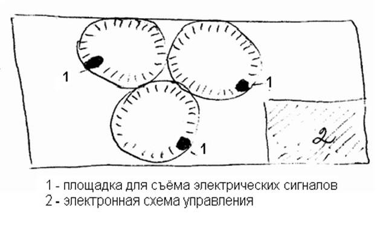

электронный
ресурс по учебной дисциплине 1-58 01 01 - "ИНЖЕНЕРНО-ПСИХОЛОГИЧЕСКОЕ ОБЕСПЕЧЕНИЕ ИНФОРМАЦИОННЫХ ТЕХНОЛОГИЙ"
|
||
| Оглавление | Программа | Теория | Практика| Контроль знаний | Об авторах | ||
|
Содержание
ТЕМА 15 Применение изделий микросистемной техники в приборостроении § 15.1 Применение изделий микросистемной техники в приборостроении. § 15.2 DARPA-проекты. § 15.3 Микророботы и микромашины. § 15.4 Перспективы развития микротехнологий и микросистемных изделий § 15.1 Применение изделий микросистемной техники в приборостроении. Экономические предпосылки развития МСТ. В классических промышленных производствах резкое удорожание изделий происходит по мере: 1) Снижения его линейных размеров; 2) Роста точности изготовления деталей механических систем. Экономически много выгоднее: 1) Изготавливать в едином техпроцессе отдельные узлы микромеханических систем, не применяя сборочных операций. 2) Получать МЭМС – узлы микронных размеров одновременно, в едином техпроцессе с микроэлементными схемами управления. Экономически немного выгоднее изготавливать в едином цикле все микроизделие в целом. 3) использовать технологические наработки микроэлектроник (массовое производство UMC чрезвычайно дешево). Использовать доведенное до высочайшего совершенства оборудование микроэлектроники. 4) За счет массового МЭМС – изготовления, резко уменьшить себестоимость изделий и энергопотребление производства. Почему интересы микросистем для инженеров, технологов, для науки? 1) Реализуются новые принципы преобразования с относительно высоким КПД Не электрических параметров в электрические. получение таких относительно высоких КПД Не всегда осуществимо в микроустройствах. 2) Могут быть применены новые очень дорогостоящие “умные” материалы. Использовать последние в соответствующих макроустройствах было бы просто невозможно по экономическим причинам. 3) Динамические характеристики микро-датчиков, вследствие очень малых размеров их чувствительных элементов, значительно выше, чем у макродатчиков. т.е. Микродатчики обладают очень высоким быстродействием. 4) Появляется возможность создать “интеллектуальный” микродатчик. Это когда конструктивно в нем реализована концепция интегрального исполнения сенсора с микрокомпьютером. Система позволяет осуществлять корректирующее воздействие на сигнал, получаемый с микродатчика, например, компенсировать влияние помех. “Интеллектуальность” микродатчиков это когда в них реализованы функции: – Усиление сигнала – Обработки сигнала – Запоминание сигнала 5) Микроразмеры МСТ изделий позволяют использовать при их изготовлении микротехнологии. Производство МСТ – изделий легко совмещается с производством микросхем электронной обработки измеряемых сигналов. 6) Некоторые физические эффекты могут быть реализованы только на основе МЭМС, т.е. Только при использовании минимальных объемов. Вот поэтому применение МЭМС в первичных измерительных преобразователях очень перспективно. Некоторые разработки в России. Полупроводниковые выброгироскопы (рисунок 15.1) для приборов точной ориентации (представлена на следующем слайде). Одновременно на пластине формируется более 100 преобразователей. Технология, анодно-диффузионной сварки, селективного химического травления и др.  Рисунок 15.1 – Полупроводниковые выброгироскопы Микрозонд для изучения газодинамических потоков (рисунок 15.2). Конструкция в виде иглы. В острие смонтирована пневмоголова с тремя газовыми каналами. Нарушенный диаметр иглы 2,6 мм, сечение газосборных отверстий 0,3x0,4 мм. Одновременно изготавливаются до стони готовых деталей. Рисунок 15.2 – Микрозонд для изучения газодинамических потоков Медицинский катетерный тензодинамометр (рис. 15.3) для измерения давления во внутренних инъекций и катетероризации полостей и протоков. Разработано измерительное устройство для многоканального мониторинга в послеоперационном периоде. Рисунок 15.3 – Медицинский катетерный тензодинамометр Полупроводниковые монокристаллические тензопреобразователи (микродатчики давления (рис.15.4)) на базе кремниевых мембранных преобразователей
Рисунок 15.4 – Микродатчик давления Поликристаллические тензорезисторы. На основе поликристаллических тензорезистивных пленок соединений a4b4 c высоким коэффициентом тензочувствительности (не менее 200). На основе оксидных полупроводниковых соединений разработаны поликристаллические пленочные тензорезисторы с очень высоким диапазоном рабочих температур. Предназначены для высокотемпературных двигателей и мониторинга горячих производств. Интегральные сенсорные системы, созданные с применением МЭМС– и МОЭМС– технологий. МЭМС-технологии позволяют создавать интегральные сенсорные системы, последние могут служить в качестве микродатчиков: 1) давления 2) смещения 3) ускорения 4) угловых скоростей 5) удельного веса 6) магнитного поля 7) различных химических параметров МОЭМС-сенсорные системы используются в различных приборах обработки информации. Рассмотрим некоторые параметры интегральных сенсорных систем, созданных с применением МЭМС- и МОЭМС-технологий. Кремниевый микродатчики давления с полупроводниковыми текзорезисторами (пьезо-резисторами). Пьезорезистивные микродатчики давления. Применение: в автомобильной аппаратуре для измерения динамических давлений газовых и жидкостных потоков. В медицинской технике для измерения кровяного давления. Основные недостатки – относительно невысокая чувствительность и значительный дрейф характеристик. Высокочувствительные емкостные микро-датчики давления. Применение:Приемная мембрана микродатчика имеет квадратную форму с длиной сторон 400-500 мкм и толщиной около 20 мкм. Опорный чувствительный элемент микро-датчика позволяет существенно снизить влияние паразитных емкостей на его показания. Микроакселерометры на пьезорезистивных сенсорах ускорения (высокоточные микродатчики инерционного типа). Применение: в автомобильном оборудовании: в системах защиты водителя при наздах на препятствия; в системах автоматического торможния без проскальзывания колес. Высокочувствительные микроакселераторы. Применение: интегральные гибридные микроприборы, действующие: с использование КМОП структур; на основе туннельного эффекта; на основе других ещё более сложных принципов. Кремниевые микрогироскопы, микродатчики угловых скоростей (инерционного типа). Применение: в системах управления подвесками рам автомобилей, а также в системах вычисления траектории их движения. Круглый чувствительный инерциальный элемент изготовлен из поли-Si. Высокоточные микродатчики углового положения. Построены на использовании интегральной микроструктуры типа КМОП. Вибрационные микрогироскопы камертонного типа. Применение: в системах управления малогабаритными дистанционно управляемыми летательными аппаратами. Микрорасходомеры с кремниевыми микро-датчиками. Применение: для измерений расходов газовых и жидкостных сред. Основным требованием к макроприборам: высокая стойкость к воздействию сред, расходы которых измеряются; долговременная стабильность Микродатчики скоростей жидкостных потоков. Применяются в микрорасходомерах. Диапазон измеряемых скоростей составляют от 0,2 до 30 м/с. Кремниевые детекторы ИК излучения, термоэлектрические сенсоры. Применение: для дистанционного управления температурами, для регистрации температур объектов в системах безопасности других системах. Микротермоанимометры (сенсоры скоростей воздушных потоков с терморезисторами). Микродатчики скоростей воздушных потоков термоанемометрического типа. Применение: для измерения расходов воздушных потоков. Например, поступающих в автомобильные двигатели. Микродатчик содержит столбик из термоэлектрических (термопарных) преобразователей, закрепленный на кремниевой мембране, предварительно покрытой изолирующей пленкой из нитрида кремния. Микродатчики магнитного поля на основе эффекта Холла (изготовлены по технологии СБИС). Применение: для измерения магнитного поля. Изготовлены по технологии СБИС. Имеют высокую термостабильность. Микродатчики для контроля химических параметров. Применение: для контроля микропримесей в водороде. Водород широко применяются в микроэлектронном производстве. Микродатчики плотности жидкостей. Применение: для определения плотности жидкостей в очень малых количествах при проведении химических анализов. Микродатчик планарной конструкции с кремниевыми капиллярными трубками. Примеры наиболее широко изготовляемых в мире изделий микросистемной техники. По сути дела, изделия МСТ представляют собой миниатюрную элементную базу, применяемую в: 1) гражданском 2) специальном 3) военном приборостроении Отрасли науки, техники и технологии, где уже сейчас применяются приборы и системы с изделиями МСТ: 1) автомобильный и ж/д транспорт 2) аэрокосмическая техника и военное дело (ракетно-артиллерийские системы) 3) добывающий и энергетический комплекс (газ, нефть, ядерное топливо) 4) химическая промышленность и химическая защита 5) обнаружение, исследование и утилизация особо опасных веществ 6) пищевая и перерабатывающая промышленности 7) медицина, биотехника и микробиология 8) наноэлектроника и наноэлектронные системы военного назначения Наиболее широко изготавливаемые изделия МСТ: 1) Микроголовки для НЖД (накопители на жестких дисках) 2) Микроголовки для струйных принтеров 3) Микрокардиопейсмейкеры 4) In-vitro – диагностические микроприборы 5) Слуховые микроаппараты 6) Микродатчики давления 7) Химические микросенсоры 8) Формирование ИК-видеосигналов 9) Микроаселерометры (acceleration – ускорение) 10) Микрогироскопы 11) Магниторезисторные микросенсоры 12) Микроспектрометры 13) Микросистемы подачи лекарственных сред 14) Оптические микропереключатели 15) Микролаборатория на чипе: ДНК, жидкостная хромотография высокого разрешения 16) Магнитооптические микроголовки 17) Проекционные световые микрозатворы 18) Катушки индуктивности на чипе 19) Микрореле 20) Микроэлектродвигатели 21) Микроинклинометры (микроугломеры) 22) Впрыскивающие микросопла 23) Микросенсоры для предупреждения столкновения 24) Электронные микронасосы § 15.2 DARPA – проекты. DARPA – проектное агентство перспективных исследований (МО США).
Рисунок 15.6 – DARPA-программы Созданные биоситемы могут выполнять функции поиска, идентификации, измерения военных целей. Надо только научится управлять этими насекомыми и грызунами.
Рисунок 15.7 – Управляемые биологические системы На основе исследований живых природных организмов создаются биоподобные микророботы. Рисунок 15.8 – Биоподобные системы Области применение биоподобных микророботов: • Военная разведка • Разминирование • Доставка полезных грузов • Сбор различной информации • Охрана объектов • Незаметный поиск целей и передача информации на КП (командный пункт) • Раннее обнаружение радиационных, химических и бактериологических атак • Навигационные задачи • Нейтрализация вооружений противника • Борьба с терроризмом • Диверсии Микроробот «Скорпион» предназначен для действия в пустыне. Задача заключается в ориентировании в пустыне в радиусе 25 миль без связи с оператором и в самостоятельном возвращении на место дислокации. Змееподобные роботы являются идеальной инспекционной, диверсионной и разведсистемой для полостей, коробов, канализационных коллекторов и труб. § 15.3 Микророботы и микромашины. Микроаппаратура с применением микроэлектромеханических систем. Создаются по заказам МО США. Основные отличия ЛМА от дистанционно управляемых спортивных моделей. С оператора снимаются физические и психологические нагрузки, которые испытывает экипаж пилотируемого над целями противника самолета. ЛМА – это, как правило, техника индивидуального разового использования. Рисунок 15.5 – Классификация микроаппаратов ЛМА делятся: - диверсионное средство; - разведсредство; - средство патрулирования; - средство мониторинга последствий природных и техногенных катастроф; - средство спецконтроля. Основные задачи летательных микроаппаратов: - Визуальная, химическая, радиационная, бактериологическая, биологическая, акусти-ческая разведка. - Скрытое проникновение на объекты противника. - Систематическое наблюдение (патрули-рование) районов аварий и чрезвычайных ситуаций. - Поиск пострадавших. - Мониторинг территорий и объектов. § 15.4 Перспективы развития микротехнологий и микросистемных изделий Условно можно выделить три этапа развития микросистемой техники. Мир находится только-только в начале второго этапа. Некоторые черты 3-го этапа развития МСТ 1) Это этап распределенных информационно-управляющих систем, «умных» материалов и структур. 2) Характерным является построение распределенных систем из однотипных элементов-триад. Триады объединяют в себе сенсорную, решающую и актюаторную компоненты. 3) Такие триады по существу являются аналогами биологических клеток. 4) Как и в живых структурах, клетки (триады) обязательно должны быть идентичными, и могут иметь и специфические особенности, связанные со специализацией их функций. Существуют общие свойства таких триадных «клеток»: – наличие цели существования и деятельности; – побудительные мотивы для достижения этой цели; – способность к анализу ситуации; – способность к самостоятельному принятию решению на уровне своей компетенции – способность к обучению, как запоминанию результата «анализ-действие» Объединение клеток-триад может осуществляться как за счет взаимодействия с центральным управляющим звеном, так и за счет взаимодействия между клетками. По степени связей клеток-триад между собой распределенные системы делятся на три категории. Таблица 15.1 – Разновидности распределенных систем «Умная пыль»: 1) механические связи между триадами отсутствуют 2) синхронизация действий осуществляется центральным управляющим звеном 3) биологический аналог - рой летающих или ползающих насекомых (пчелы, муравьи) 4) предполагаемые области применения: 4.1) наблюдение за погодой 4.2) аэро- и гидродинамические измерения в потоках 4.3) разведка 4.4) создание радиопомех и ложных целей 4.5) диагностические и ремонтные работы внутри трубопроводов и горячих зон «тараканы» для уборки и сортировки мусора и др. «Умная поверхность»: 1) имеет жесткое фиксированное размещение элементов в узлах сетки (необязательно на одной поверхности), исключающее возможность их пространственного перераспределения 2) активные информационные связи между элементами и центральным управляющим звеном. Это обеспечивает синхронизацию как локальных, так и глобальных задач управления 3) биологический аналог – кожа дельфина: согласованная работа элементов кожи, воздействуя на структуру поверхностного слоя среды, уменьшает аэро- или гидродинамическое сопротивление. 4) Предполагаемые области применения: 4.1) кораблестроение и авиация 4.2) активные акустические подавители шума 4.3) адаптивные оптические и радиотехнические системы и др. «Умная структура»: 1) имеются силовые механические связи между элементами 2) при этом в системах имеется возможность пространственного перераспределения элементов 3) возможно взаимное перемещение элементов по команде центрального звена, по собственной инициативе или под действием связанных с ними других элементов 4) наличие активных информационных локальных и центральных связей 5) существует определение не только локальных, но и глобальных взаимных координат элементов 6) биологический аналог, по-видимому, отсутствует. Наиболее близок -человек, но с возможностью «сказочных» превращений (волк, птица, дракон и т.п.) 7) очевидные области применения: 7.1) перераспределяемые адаптивные робототехнические системы и их движущиеся устройства («руки», «ноги», «схваты», «инструменты») 7.2) распределенные адаптивные системы средств передвижения 7.3) адаптивные конфигурации крыльев, винтов, рулевых поверхностей. В качестве итогов посмотрим некоторые черты технического облика цивилизаций через 50-100 лет, вытекающие из возможностей эволюции МСТ. «Разумное» жилище. Обеспечивает все элементы физического и интеллектуального комфорта. «Разумные средства передвижения». Выполняют функции самого искусного водителя. Человекоподобный робот. Наделен широчайшим спектром сенсорики, разумным поведением и почти неограниченным запасом средств воздействия. «Силовые облака». Перестраиваются из безобидных в единичном элементе железных мушек. Похожие на эти и многие другие устройства, связанные с развитием МСТ, будут также обыденно восприниматься нашими внуками, как мы привычно относимся к радио- и телевизионной связи, к персональному компьютеру.
|
| (С) БГУИР |